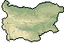

Impressions
If you can lie down without holding on, you're not drunk.
On this page I give my impressions of living in Bulgaria. A lot of it is critical, but please make no mistake: I love this country. It is a fantastic place, with lovely people and an enjoyable and relaxing way of life. Just there are certain elements which are so confusing, stressful and complicated that if Bulgaria wasn't such a relaxed country in the first place, I would have had a nervous breakdown by now.
| The Good | The Bad | And The Ugly | |
|
What do I like most about Bulgaria? The way they treat friends and relatives. I have rarely seen such warm-heartedness anywhere in the 'developed' world. The way I have been received here is fantastic and it really makes me love the country. Bulgaria also has great food. The reason for this is that nearly everything you eat is fresh. The difference this makes is amazing. A tomato picked in the morning and eaten for lunch tastes delicious. In comparison a tomato which was picked when green in Spain and sold a week later in a British supermarket tastes of nothing. The Bulgarian feta cheese (sirene) is gorgeous, whilst their yellow cheese (kashkaval) is tasty. They make nice salads. Something as basic as tomatoes, cucumber and feta tastes fantastic when prepared as a Shopska salad. Then there are the Gyuvetches, vegetables and/or meat baked in a small pot, possibly covered in eggs and cheese. Mouthwatering. Sarmi (rice wrapped in vine or cabbage leaves), tsa-tsa (small fried fish), stuffed peppers, tarator "soup" (yogurt, water, cucumber, garlic, salt, pepper) and banitsa all are delicious. The amazing thing is, I have lost weight since arriving here. Perhaps all this food is healthy as well? Of course, we can't talk about food and not mention drink. First there is the Rakia. The Bulgarian brandy. It's great. Especially the homemade stuff. Fantastic! Rakia is an institution in Bulgaria. You can't have a party without it. The first time I drank Rakia, I had about a spoonful and considered it to be rather strange. The reason being that it was served as a starter with the salad. Have you ever thought about drinking brandy with salad? No me neither. But it is a remarkably good combination. Now I know what some of you are thinking. The salad must be so bad, that you have to follow it with a shot of Rakia to remove the taste. But in actual fact the opposite is true. You first drink some Rakia, this awakens your taste buds and then you can really taste the gorgeous salad. Ok, enough about Rakia. Lets talk about wine. Everybody, and I really mean everybody, makes their own wine in Bulgaria. And they are all bloody good at it! Homemade wine may not have the sophistication of some of the French wines, but hey, if you knew what they put in your average bottle of Bordeaux, you'd quickly switch to homemade Bulgarian wine. Generally there are only two ingredients - grapes and sugar. Simple, basic and tasty. The award for the best homemade wine goes to the parents of my friend Elena who live in Plovdiv. That for Rakia goes to Kaleko Petio, in Boliartsi. Music. Bulgaria has some lovely folk music. They have developed a special form of singing, known as polyphonic I believe. Hearing a Bulgarian folk choir sing this is quite impressive. Bulgaria hosts what is I believe the biggest folk music festival every 5 years in the Balkan mountains. It sounds like a beautiful setting. Then they have Chalga. A form of music much derided by the Bulgarians themselves, but one you will here on any local village bus. I love it! It's certainly a good distraction from the precarious condition of the bus. It sounds fairly exotic - which is probably why most foreigners tend to quite like it. From a cultural point of view, there is also plenty to see. Bulgaria has numerous monasteries of varying quality dotted around the country. The most impressive (and largest) of them all is undoubtedly Rila monastery, south of Sofia. There are some lovely icon paintings here. Then there is Bachkovo, south of Plovdiv, which is slightly smaller, but equally beautiful. On the east coast, there is the Aladja monastery, carved into the limestone rocks and in the far south, near Melnik is Rozhen, a small, but pretty monastery. Sofia contains a number of interesting churches and other buildings, Plovdiv has a huge Roman influence, and contains a beautifully kept roman amphitheatre which hosts numerous musical performances in summer with great views and surroundings. Veliko Turnovo is full of history, being the one time capital of the country. The Tsarevets fortress overlooking the town is also impressive and hosts what is supposed to be a beautiful sound and light display for tourists in summer. Then there are the villages of Elena, Tryavna and Koprivshtitsa all with authentic Bulgarian renaissance style houses. Finally Varna has various Roman remains and its Archeological museum contains the oldest gold ornaments in the world. Of course Varna also has plenty of culture of another type as well. Beach, sun, water and nightlife. Last, but not least, I love the Bulgarian nature. It is beautiful. Now most countries have beautiful nature, but what I like about Bulgarian nature, is that it is relatively undeveloped and unkept, therefore being more natural. So far I haven't been to the big mountains really. I visited Melnik, in Pirin, which is beautiful and drove through the Rila mountains, which seemed to be pretty. Also, I visited Madara on the eastern edge of the Balkans, which has great views of the surroundings. But from what I have seen of photos, Bulgaria certainly looks like a great place to go hiking. top |
What do I like least about Bulgaria? The way they treat strangers - by this I don't mean foreigners, but simply people they do not know. From my observations, Bulgarians tend to have little respect for people they don't know. Certainly they do not have a tendency to help each other - rather they will try to exploit each other even more than the tourists!(1) Possibly due to historical reasons and certainly not helped by the various governments of the last 10 years, Bulgaria is very much a country of every man to himself.(2) This is fine, but I just feel that in a country where so many people struggle, if they all worked together, they could achieve a lot more. Then there is the problem about heating in winter. The communist government never thought to construct a gas infrastructure in Bulgaria, since at that time electricity was cheap. However, now people really freeze in winter because no one can afford to heat badly insulated flats with inefficient electric heaters. Communism wasn't all bad, but one of the major gripes I have with it is that nothing had a value. So therefore the communist government didn't care how much electricity was needed to heat, since anyway it all got produced for 'free' in the power station. The fact that it is (thermodynamically speaking!) much more efficient to heat with gas didn't interest them. Thus whilst the whole of western Europe is gasified, Bulgarians now mostly can only afford to heat with coal and wood! Only now are they starting (slowly) to build gas networks. Another thing is driving in Bulgaria. It is simply dangerous. Roads are very badly marked, often with potholes in the middle of them. Little, if any, lighting means driving at night is akin to having a death wish!. During the day you then have to contend with horse drawn carts, 60 year old trucks three times overloaded and people all using the same stretch of road. To top it all off there is only one lane each way, making overtaking very dangerous. In towns many of the minor roads are littered with potholes, thus aging your car about twice as quick as normal. It also explains the condition, or lack of it, of most cars here. Having said all that, the major roads (in and outside of towns) are actually ok. And driving on the limited amount of motorways is sheer bliss, since they are mainly empty. In fact this is the saving grace of the Bulgarian road network - there simply aren't that many vehicles around and there are certainly no traffic jams like in western Europe. One thing I really hate though, is being a pedestrian in towns. Cars do NOT give way. So even if the pedestrian light is green, a car turning right, across your path, will not stop for you. Instead you must watch out and let cars turn before you can start crossing. This can result in the somewhat comical situation of needing three or four green lights until you actually manage it across the road! On the positive side though, I have found most drivers to be relatively patient (excluding the Mafiosi driving their big Mercs and BMWs) and certainly much calmer and more courteous than what I have seen in some parts of Italy for example. The best thing about driving in Bulgaria though, is that drivers will flash their headlights at you as a warning of a police trap ahead. So if you see someone flash their lights at you, you should slow down and certainly don't do any overtaking. I have noticed cars often get pulled over just after pulling out and hastily overtaking someone. Possibly the most annoying thing though is the fact that foreigners get charged more for certain things such as hotels and museums. On the one hand I can see the logic in making foreigners pay a little more given that they are undoubtedly far richer. On the other hand the fact that this money simply ends up in the hands of some rich business man rather than, for example, with the hotel receptionists means I strongly disapprove of this. Then there are the inflated entrance fees to museums. I wouldn't mind paying three times more than the locals to see a museum, if they bothered to put the labels in English as well. But why should I pay this money, if when I enter I can't understand anything!! Although, to be honest it is the same for Bulgarians, since many museums, especially ruins, simply have no explanations in any language. An example would be the roman baths in Varna, where you can happily walk round unkept ruins without ever knowing what it is you are actually walking through. Finally, there is the question of rubbish disposal in Bulgaria. Most villages do not have any rubbish collection to speak of (except for enterprising Gipsies). So people either dump it on the edge of the village, or burn it in the winter. It is hard to complain too much about this, given the little amount of money most councils receive, however what then happens is that this rubbish gets blown all over the countryside. In the cities the problem isn't quite as acute, since there is rubbish collection. Sadly, in my observation, this often simply entails setting light to the contents of the metal bins! Not particularly environmentally friendly. top |
What do I hate most about Bulgaria? The Administrative system. I have never before encountered a less friendly, more useless, unmotivated and completely informationless system as the Bulgarian administration. In fact, it is so archaic that it wouldn't be out of place in Jurassic Park. Although this is doing dinosaurs a great discredit. So far I have encountered this bureaucratic nightmare on a number of occasions. First and foremost, was in trying to extend my visa by six months. Having paid £50 for a three month visa in the Bulgarian embassy in London, I then turned up in Plovdiv to extend my visa. The first thing which struck me was how disinterested the administration were. To them, I was just some nuisance who was to be got rid off as quickly as possible. Little did I know, that this would turn out to be the best bit about the them! Then was the problem about trying to get any info whatsoever out of these people. The idea that they are public servants and therefore work for me - the taxpayer - hasn't quite made it to Bulgaria. Ask a question and you can be lucky if you only get an earful in return. I got the impression that the reason for this aversion to questions was simply that they themselves did not know what they were doing. Thus asking a question would probably mean them having to admit they don't know the answer. In any case after a month of queuing, quarreling, numerous wild goose chases around half of Plovdiv and the payment of many taxes and fees they eventually accepted my application. They then told me I had to pay 500 levs to complete the application! Wow, in a country where the average wage is 250 lev per month, this seemed nothing short of extortion (or corruption). Since this fee was not mentioned anywhere I asked for some prove that it is correct. A stare that could kill at a hundred paces was what I got in return. Eventually they said to look in the state newspapers. This we then went away to do. Phoning them up to ask where, exactly in the state newspaper this was stated, resulted in being hung up on three times before one slightly more helpful person told us. In any case, a month and many nerves later my visa was extended - but not by 6 months, which is what I had paid for, but by 3 months. This no one could explain to me and I still now do not know why... I then moved to Varna and repeated the whole process there towards the end of my visa extension. Now, I would have thought, given that I already have been allowed to extend my visa once, extending it a second time would be a formality. I mean, they should already have all the info they need. Wishful thinking. It gets more complicated. I had to provide a whole host of documentation previously not required. The only positive thing to come out of the second extension, was that it was extended for the full 6 months. Trying to buy an imported car is equally laborious. Even the guy I bought the car from said, that had he been me, he would have simply given up trying to navigate his way through the bureaucratic maze that is the Bulgarian administrative system. Again, information was severely lacking and questions were kindly replied to by telling you to get lost. My general feeling is that the administration works by running an account on how much you have paid in legal fees, taxes, duties, nerves and time. Once your account reaches a certain level your application is accepted. It is the only explanation I can find for the way the system works. What is most annoying about all of this, is that each time you have to pay a state tax, instead of simply paying it to the administration, you have to go to a bank and pay it there. Of course the bank takes an above average commission! A brief word about queuing. In order to navigate this administrative maze you must queue. And I really mean queue. I could have finished reading Tolstoy's War and Peace in the time it took me to queue for all my documents. And it's not just simple matter of queuing once and then being able to do everything in one go. No, you queue in office A, for half an hour. They then find a reason to send you to queue for office B. Then you return to the queue for office A, who eventually send you to office C. They then tell you to pay your taxes in office D. And upon return to office A, you must go to office E to get another application form. Why can't I do all this in one office? Arrgghhhhhh.. This is repeated across the board in all forms of public administration and public services. Thankfully I am unemployed, otherwise I would never have had the time to extend my visa even once! Even such a simply thing as making a reservation on a train (having already bought the ticket) is turned into a sort of treasure hunt of mammoth proportions. We were sent to 4 different offices before someone could make a reservation for us. And in the third office they said we can only make the reservation after 8pm (in the fourth office). This sounded so ludicrous, that we went to office number 4 anyway, who then promptly made a reservation for us (at 4pm). So even when they do give out information - it is wrong! Most countries are trying to develop an "Information Superhighway". Bulgaria is busy building an "Information Black Hole". top |